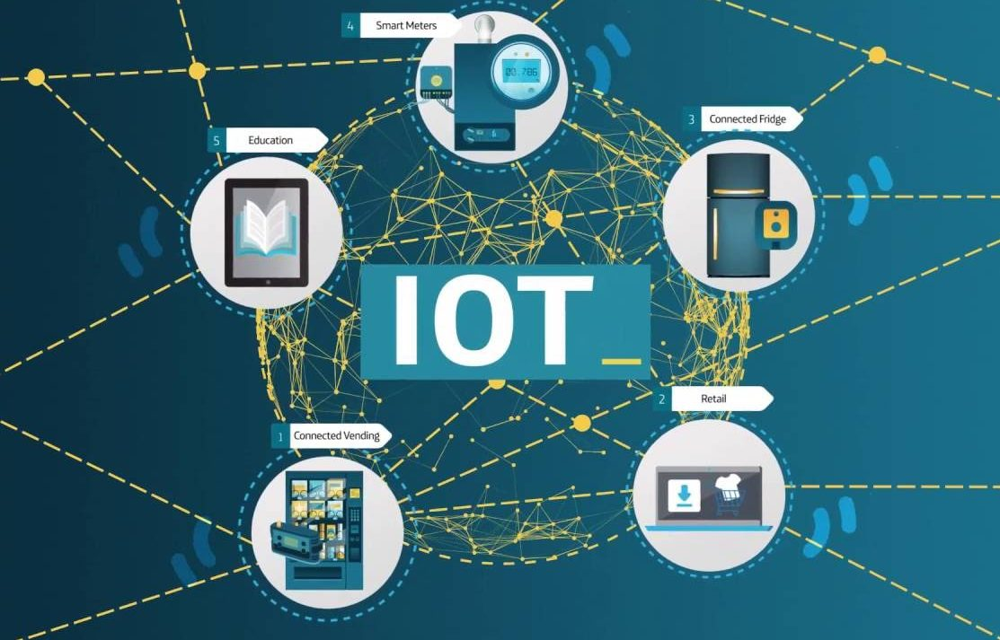

Expertos en ciberseguridad advierten sobre vulnerabilidades críticas en dispositivos IoT
El artículo detalla las preocupaciones expresadas por expertos en ciberseguridad sobre las vulnerabilidades críticas encontradas en dispositivos de Internet de las Cosas (IoT).
vulnerabilidades representan una seria amenaza para la seguridad cibernética:- Que los dispositivos IoT están cada vez más integrados en nuestra vida cotidiana y en infraestructuras clave como ciudades inteligentes y sistemas de salud.
- Los expertos advierten que, si no se abordan adecuadamente, estas vulnerabilidades podrían ser explotadas por ciberdelincuentes para llevar a cabo ataques masivos y potencialmente devastadores.
enfatiza la necesidad de que fabricantes, reguladores y usuarios trabajen juntos para mejorar la seguridad de los dispositivos IoT y proteger así la integridad de nuestras redes y sistemas digitales.
Para obtener más información, visita el sitio web oficial de CyberSecGuard.

Presentamos CyberSecGuard: La Última Defensa en Ciberseguridad Empresarial
El artículo presenta CyberSecGuard, una nueva herramienta de ciberseguridad diseñada para proteger las empresas contra una amplia gama de amenazas cibernéticas. Desarrollada por un equipo de expertos en seguridad, esta herramienta combina tecnologías avanzadas de detección de amenazas, análisis de comportamiento y aprendizaje automático para proporcionar una defensa integral contra ataques maliciosos.
- Detección proactiva de amenazas
- Respuesta automatizada a incidentes
- Monitoreo continuo de la red
- Análisis forense en tiempo real
Además, la herramienta se adapta dinámicamente a las nuevas amenazas a medida que surgen, garantizando una protección actualizada y efectiva en todo momento.
Los beneficios clave de CyberSecGuardincluyen:
- Reducción del riesgo de brechas de seguridad
- Minimización del tiempo de inactividad
- Protección de la reputación de la empresa
También se mencionan casos de éxito de empresas que han implementado esta herramienta y han experimentado una mejora significativa en su postura de seguridad cibernética.
En resumen,CyberSecGuard emerge como una solución líder en el mercado de la ciberseguridad empresarial, proporcionando a las organizaciones las herramientas necesarias para defenderse contra las crecientes amenazas cibernéticas en el panorama actual.
Para obtener más información, visita el sitio web oficial de CyberSecGuard.